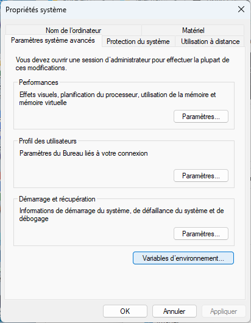

Utiliser le terminal
Une fois l'utilisation du terminal comprise (cela ne prend pas beaucoup de temps), cela vous fera gagner un temps fou.
Ouvrez un terminal et tapez les différentes commandes pour se les mettre dans les doigts.
Le corrigé des exercices montrent les résultat sur :
- un terminal d'une machine Linux où mon login est
fbrucker - un powershell d'une machine Windows 11 où mon login est
fbrucker
Prompt
Lorsque l'on ouvre un terminal, on se retrouve devant un prompt.
À retenir
Dans tous les exemples d'utilisation du terminal, on fera commencer la commande par le prompt :
$si le terminal utilisé est un shell unix (linux/wsl/macos)>si le terminal est un powershell windows$>si le terminal utilisé peut être indifféremment un powershell ou un unix
Ce prompt sera différent selon le terminal utilisé, mais il aura toujours la même fonction : on tape une ligne de commande à la suite du prompt et on appuie sur entrée pour l'exécuter. Par exemple :
$> lsQui est uniquement composée de la commande ls et qui liste les fichiers du dossier courant, ou encore :
$> cd /Qui est une ligne composée :
- de la commande
cd - d'un paramètre
/
Les instructions sous différentes entre les systèmes Unix (Linux et Mac) qu'on appelle shell et le système Windows appelé powershell, mais il existe presque toujours un equivalent entre les instruction unix/mac et powershell. Nous ne verrons que les commandes de bases du terminal utilisable sur les deux plateformes mais il en existe de nombreuses autres, n'hésitez pas à expérimenter (on ira bien plus loin dans la partie Linux de ce cours) :
Dossier courant
De plus un terminal est toujours positionné dans un dossier précis de votre arborescence de fichiers. C'est le dossier courant.
À retenir
Un terminal est toujours positionné dans un dossier, appelé dossier courant.
L'exécution d'une ligne de commande se fera toujours par rapport à cet endroit.
Commande
Pour connaître le dossier courant d'un terminal, on utilise la commande pwd.
Manuel
pwddu powershell alias vers la commandeGet-Locationpwdunix
Lorsque l'on ouvre un terminal, son dossier courant est souvent le dossier principal de l'utilisateur. Mais on a aussi vu que l'on pouvait aussi directement ouvrir un terminal dans un dossier spécifique.
Tapez la commande suivante dans un terminal nouvellement ouvert :
$> pwd
exemples
exemples
$ pwd
/home/fbrucker
> pwd
Path
----
C:\Users\fbrucker
Utilisateur courant
Enfin, un terminal dépend toujours d'un utilisateur. Par défaut c'est celui qui a ouvert la session, mais il est possible (et on le fera intensivement plus tard) de changer d'utilisateur voir de se connecter sur des ordinateurs distant via le terminal. Il est alors crucial de connaître le login de l'utilisateur exécutant ce terminal.
Commande
Pour connaître l'utilisateur du terminal, on utilise la commande whoami.
Manuel
Tapez la commande suivante dans un terminal :
$> whoami
exemples
exemples
$ whoami
fbrucker
> whoami
franoisbruca7be\fbrucker
Ligne de commande
Une ligne de commande sera toujours composée de mots séparé par des espaces :
Définition
Une ligne de commande est une chaîne de caractères composées de mots séparés par un ou plusieurs espaces tes que :
- le premier mot est la commande et sera :
- soit un fichier exécutable
- soit une instructions compréhensible par le terminal, comme
lspar exemple.
- les mots suivants sont optionnels et sont les paramètres de la commande.
Commande
Le premier élément d'une ligne de commande est un fichier qui doit être exécuté. Par exemple :
$> python mon_script.pyComme le mot python n'est pas une instruction c'est forcément un fichier exécutable. Le système d'exploitation cherche alors un fichier s'appelant python (ou python.exe si on est sous windows) dans un ensemble de dossiers qu'on appelle le path :
- Si le fichier
python(oupython.exesi on est sous windows) n'est pas trouvé, le terminal rend une erreur. - S'il est trouvé, il est exécuté.
Souvent . (le répertoire courant) n'est pas dans le path. Il faut donc taper ./truc si on veut exécuter le fichier s'appelant truc dans le dossier courant.
Paramètres
Tout Ce qui suit l'instruction ou le fichier exécutable dans une ligne de commande sont les paramètres.
$> python mon_script.pyDans la ligne de commande précédente on a :
- un fichier à exécuter :
python - ses paramètres :
mon_script.py(quemon_script.pysoit également un fichier n'a aucune importance ici)
Les paramètres peuvent être très simple (comme ci-dessous) comme très compliqué. Par exemple : pandoc --mathjax --standalone --metadata pagetitle="titre page" --metadata charset="UTF-8" page.md -o page.html (tiré du tutorial pandoc)
Pour savoir quelles sont les paramètres possible, il faut regarder la documentation du fichier exécutable. Dans notre exemple documentation de la commande python nous indique que le paramètre mon_script.py correspond à un chemin relatif au dossier courant vers un fichier python à interpréter.
À retenir
Pour que notre commande python mon_script.py soit exécutée sans erreur il faut donc :
- qu'un fichier exécutable nommé
python(oupython.exesous windows) soit présent dans un des dossiers du path - qu'il existe un fichier nommé
mon_script.pydans le dossier courant du terminal
Quelle commande ?
La commande exécutée d'une ligne de commande est un fichier présent dans une liste de dossiers prédéfini (le path). S'il existe plusieurs possibilités, c'est la 1ère rencontrée qui est utilisée. Il existe une commande pour déterminer le chemin absolu de la commande utilisée :
Commande
whichsous unix/mac.get-commandsous powershell
Ainsi which python sous unix/mac et get-command python sous powershell vont donner le chemin absolu vers le python utilisé.
Tapez la commande suivante dans un terminal (pour un système ayant python d'installé) :
- sous linux/macos :
$ which python - sous windows :
> get-command python
exemples
exemples
$ which python
/usr/bin/python
> get-command python
CommandType Name Version Source
----------- ---- ------- ------
Application python.exe 0.0.0.0 C:\Users\fbrucker\AppData\Local\Micros...
Opérations sur les dossiers/fichiers
Opérations sur le dossier courant
On a déjà vu comment connaître l'utilisateur et le dossier courant et d'un terminal.
Liste
Commande
La commande $> ls donne le contenu du dossier courant.
Manuel
- ls du powershell alias vers la commande
Get-ChildItem - ls unix
Tapez la commande suivante dans un terminal nouvellement ouvert :
$> ls
exemples
exemples
$ ls
Desktop Documents Downloads Music Pictures Public Templates Videos
> ls
Répertoire : C:\Users\fbrucker
Mode LastWriteTime Length Name
---- ------------- ------ ----
d-r--- 03/12/2025 07:14 Contacts
d-r--- 03/12/2025 10:38 Desktop
d-r--- 03/12/2025 07:14 Documents
d-r--- 01/04/2024 10:45 Downloads
d-r--- 03/12/2025 07:14 Favorites
d-r--- 03/12/2025 07:14 Links
d-r--- 01/04/2024 10:45 Music
d-r--- 01/04/2024 10:45 Pictures
d-r--- 03/12/2025 07:14 Saved Games
d-r--- 03/12/2025 09:18 Searches
d-r--- 01/04/2024 10:45 Videos
La commande ls est en fait plus générale car on peut l'utiliser avec un paramètre qui est un chemin absolu ou relatif où lister les fichiers/dossiers :
Tapez la commande suivante dans un terminal :
$> ls /
exemples
exemples
$ ls /
bin cdrom etc lib media opt root sbin srv sys usr
boot dev home lost+found mnt proc run snap swapfile tmp var
r> ls /
Répertoire : C:\
Mode LastWriteTime Length Name
---- ------------- ------ ----
d----- 07/06/2025 17:41 inetpub
d-r--- 23/12/2025 08:16 Mac
d----- 01/04/2024 10:45 PerfLogs
d-r--- 03/12/2025 07:20 Program Files
d-r--- 03/12/2025 07:19 Program Files (x86)
d-r--- 03/12/2025 09:18 Users
d----- 23/12/2025 08:45 Windows
La commande ls admet beaucoup de paramètres. Dans le monde du terminal, une commande va faire une unique chose mais de plein de façons possibles. C'est souvent ce qui fait peur, mais au final on utilisera jamais toutes les possibilités. Par exemple la documentation de la commande ls nous permet :
- afficher toutes les informations :
- unix/mac :
$ ls -l - powershell :
> ls. L'instructionlssous powershell est équivalente àGet-ChildItem
- unix/mac :
- voir les fichiers cachés :
- unix/mac :
$ ls -a - powershell :
> ls -Force
- unix/mac :
- voir tous les fichiers et récursivement :
$ ls -R. Si je veux voir tous les fichiers depuis la racine, je peux taper :s -R /(attention ça va prendre du temps...)> ls -Depth 3. Sous powershell, il faut donner le nombre de récursion que 'on peut faire. Ici 3.
- ...
Changer le dossier courant
Pour changer de dossier courant, on utiliser la commande cd suivi d'un chemin absolu ou relatif vers un autre dossier.
Par exemple, sur mon mac, je crée un nouveau terminal. Par défaut, son dossier courant est la maison. La commande pwd me rend en effet : /Users/fbrucker.
Si je veux aller dans le dossier contenant ma plus belle photo d'Ada Lovelace, je peux taper :
- un chemin absolu :
cd /Users/fbrucker/Desktop - un chemin relatif :
cd Desktop, ou encorecd ./Desktop
Notez que je ne peux pas aller dans un fichier.
Si j'avais tapé /Users/fbrucker/Desktop/ada_lovelace.png j'aurais eu une erreur. Sur mon mac, ça dit : cd: not a directory: /Users/fbrucker/Desktop/ada_lovelace.png
Commande
La commande $> cd permet de changer le dossier courant du terminal.
Manuel
- cd du powershell alias vers la commande
Get-ChildItem - cd unix
Tapez les commandes suivantes dans un terminal nouvellement ouvert :
$> cd /
$> pwd
$> cd ~
$> pwd
exemples
exemples
$ cd /
$ pwd
/
$ cd ~
$ pwd
/home/fbrucker
> cd /
> pwd
Path
----
C:\
> cd ~
> pwd
Path
----
C:\Users\fbrucker
Sous unix, taper la commande cd sans argument permet de revenir à la maison.
Création et suppression de fichiers/dossiers
Créer un dossier
Commande
La commande $> mkdir <chemin absolu ou relatif vers le dossier à créer> permet de créer un dossier.
Manuel
- mkdir du powershell qui est un alias vers la commande
new-item - mkdir unix
Par exemple : mkdir truc/chose crée le dossier chose dans le dossier truc lui même placé dans le dossier courant (si le dossier "./truc" n'existe pas, il y a une erreur).
Copier des fichiers/dossiers
Commande
La commande cp permet de copier un dossier ou un fichier :
$> cp <chemin absolu ou relatif du dossier ou fichier à copier> <chemin absolu ou relatif vers le fichier/dossier copié>Manuel
- cp du powershell qui est un alias vers la commande
copy-item - cp unix
Par exemple : cp truc/machin chose copie le fichier machin dans le dossier relatif truc/ vers le fichier chose du dossier courant.
Notez qu'on ne peut par copier de dossier par défaut sous unix :
En regardant la documentation, trouver comment faire pour copier un dossier ainsi que ses sous dossiers sous unix et windows.
corrigé
corrigé
- sous unix on utilise le paramètre
-R - sous unix on utilise le paramètre
-recurse
Déplacer/renommer des fichiers/dossiers
Commande
La commande mv permet de déplacer un fichier :
$> mv <chemin absolu ou relatif du le fichier à déplacer> <chemin absolu ou relatif vers le fichier/dossier déplacé>Manuel
- mv du powershell qui est un alias vers la commande
move-item - mv unix
Par exemple : mv truc/machin chose déplace le fichier machin dans le dossier relatif truc/ vers le fichier chose du dossier courant.
Supprimer un fichier/dossier
Commande
La commande rm permet de supprimer un fichier ou un dossier :
$> rm <chemin absolu ou relatif vers le fichier à supprimer>
$ rm -r <chemin absolu ou relatif vers le dossier à supprimer>
> rm -Recurse <chemin absolu ou relatif vers le dossier à supprimer>Manuel
- rm du powershell redirige vers la commande
remove-item - rm unix
On vérifie qu'on a compris
Faite le jeu ci-après (c'est un genre de MUD solitaire), fait pour comprendre et utiliser le terminal unix :
Les commandes que vous verrez sont toutes utilisables avec les terminaux Linux et Macos et la plupart fonctionnent également sous powershell (ou possèdent des équivalent, comme la commande cat qui est la commande Get-Content par exemple)
Path
Le path regroupe un ensemble de dossiers où le système ira regarder pour savoir quelle commande exécuter.
Connaître le path
Dans un terminal, tapez :
Windows 11
Windows 11
> $env:Path
Systèmes Unix
Systèmes Unix
$ echo $PATHCela affichera les différents dossiers du path séparé par des :
:sous Unix;sous Windows
Modification du path
Dan un terminal, on peut modifier la variable contenant le path pour ajouter un dossier.
Par exemple, pour ajouter le dossier /users/franc/bin au début du path :
Système Windows 11
Système Windows 11
> $env:Path = "C:\users\franc\bin;" + $env:PathCes modifications ne sont pas permanentes, elles ne sont valable que dans la fenêtre du terminal. Ouvrez une nouvelle fenêtre terminal et votre modification ne sera pas effectuée.
Modification permanente du path
On a parfois besoin de modifier de façon permanente le path. Les méthodes utilisées pour cela sont différentes sous unix/mac et windows.
Pour ceci, Il faut faire la modification précédente à chaque fois que l'on ouvre un terminal. Pour éviter de devoir taper la commande à chaque fois, on va l'ajouter au fichier de configuration du terminal.s
Ce ne sont pas des modifications courantes, on peut très bien essayer de s'en passer si la modification de fichiers de configuration fait un peu peur.
sous Windows 11
sous Windows 11
Depuis le menu démarrer, allez dans les paramètres puis dans informations système. Il faut ensuite cliquer sur Paramètres avancés du système :

Pour arriver à cette fenêtre :

En cliquant sur variables d'environnement vous pourrez modifier la variable PATH :

sous Macos
sous Macos
Par défaut le shell utilisé est zsh. Son fichier de configuration lu au login est un fichier nommé .zprofile qui est dans votre dossier personnel (la maison). Vous pouvez éditer ce fichier et ajouter la ligne de modification à la fin de celui-ci.
On peut aussi le faire directement avec la commande :
$ echo 'export PATH="/users/franc/bin:$PATH"' >> $HOME/.zprofileQui ajoute la ligne export PATH="/users/franc/bin:$PATH" à la fin du fichier .zprofile de la maison.
sous Linux/Ubuntu
sous Linux/Ubuntu
Par défaut le shell utilisé est bash. Son fichier de configuration lu au login est un fichier nommé `.bash_profile{.fichier} qui est dans votre dossier personnel (la maison). Vous pouvez éditer ce fichier et ajouter la ligne de modification à la fin de celui-ci.
On peut aussi le faire directement avec la commande :
$ echo 'export PATH="/users/franc/bin:$PATH"' >> $HOME/.profileQui ajoute la ligne $ export PATH="/users/franc/bin:$PATH" à la fin du fichier .profile de la maison.